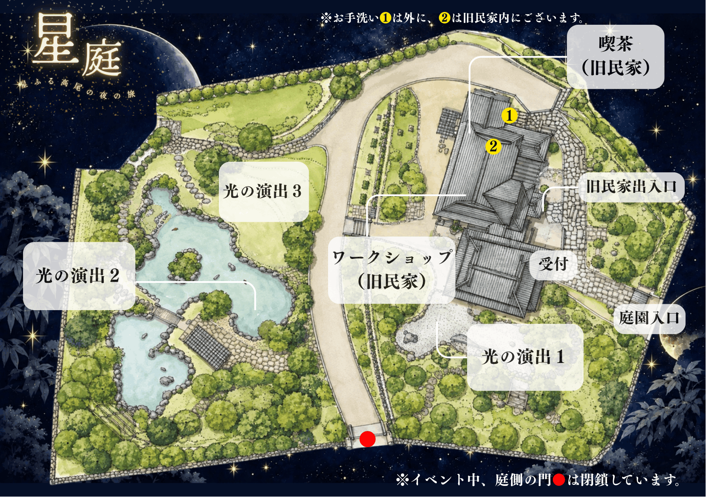
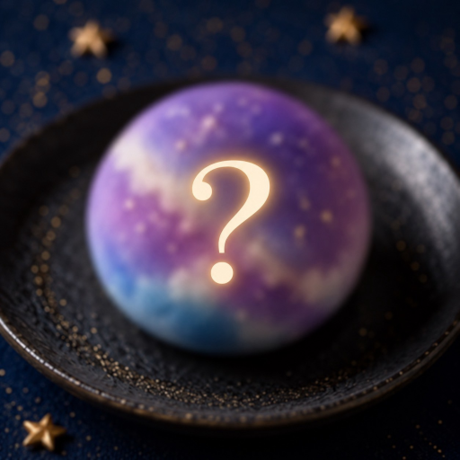
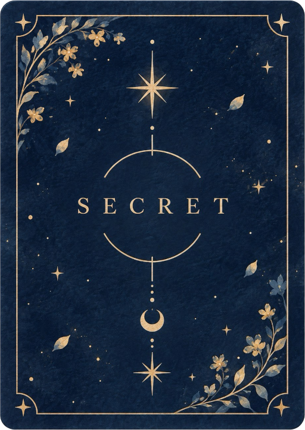
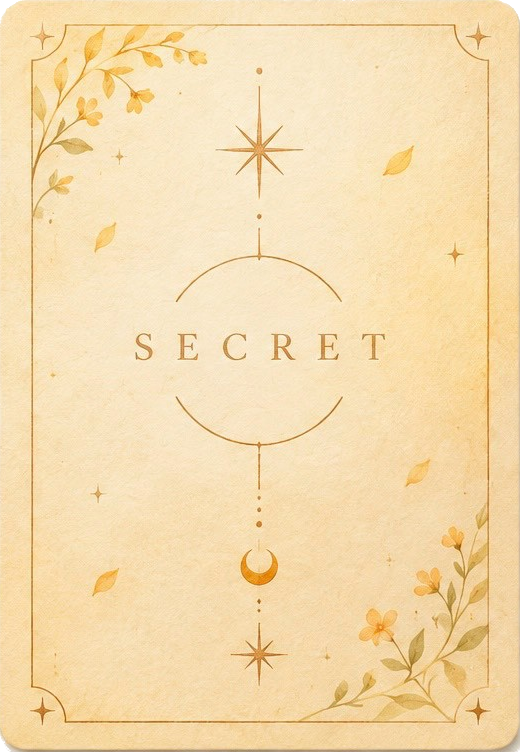
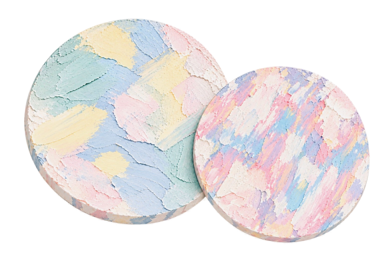

枯山水に浮かび上がる
特別な映像演出
枯山水エリア
- 枯山水の新たな鑑賞価値の創出
- 日本庭園の「見立て」文化の体験
ABOUT THE EVENT
高尾駒木野庭園を舞台に、夜の庭をゆっくり歩く特別な2日間。光と音、香りと味覚が重なり合う、ここだけの夜旅へお越しください。
お楽しみ方はこちら ↗雨天時は一部内容を変更する可能性があります。
GARDEN MAP
高尾駒木野庭園で、星ふる夜の旅をお楽しみください。

PROGRAM
枯山水エリア
池エリア

DESSERTGARDEN CARD
入園時、入園料と引き換えに全員に配布。全6種からランダムで、庭園のおすすめスポットをカードにします。

星庭カードを提示した来園者へ配布します。

星庭カード・花庭カードはそれぞれ先着100名様限定、なくなり次第終了です。
WORKSHOP
夜の庭で感じたものを、自由な模様と色で一枚の作品に。素材に触れ、手を動かしながら、自分だけの星空をつくります。

参加費1,000円参加についてイベント会場にてご案内詳細を見る →ACCESS
〒193-0844 東京都八王子市裏高尾町268-1
高尾山口駅から徒歩約15分・高尾駅から徒歩約15分
※イベント期間中は駐車場をご利用いただけません
PRESS & MEDIA
各メディアに掲載されたイベント情報はこちらからご覧いただけます。
宣伝サポート：合同会社EIP - 東京多摩おでかけガイド
CONTACT
お問い合わせEメール：okusemi10tama.meiji@gmail.com
高尾駒木野庭園HP：https://www.takaokomaginoteien.jp
奥山ゼミHP：https://okuyamalab.com